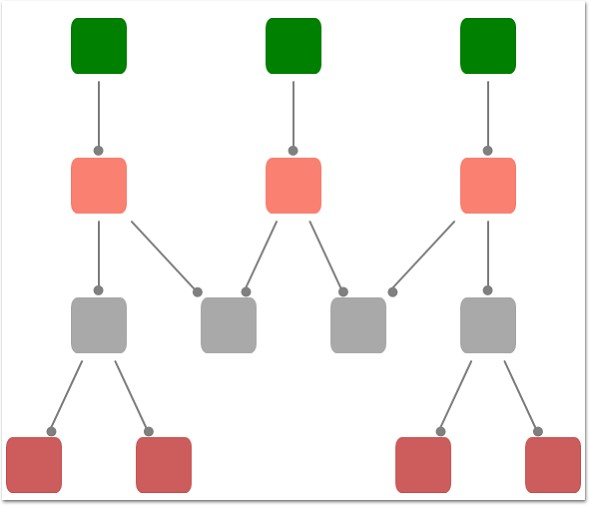

The Hierarchical Tree Layout arranges nodes in a tree-like structure, where the nodes in hierarchical layout may have multiple parents. As a result, there is no need to specify the layout root.
Orientation
The Layout Manager lets you orient the hierarchical tree in many directions. The Orientation property of Diagram Model can be used to specify the tree orientation.
· TopBottom - Places the root node at the top and the child nodes are arranged below the root node.
· BottomTop - Places the root node at the bottom and the child nodes are arranged above the root node.
· LeftRight - Places the root node at the left and the child nodes are arranged on the right side of the root node.
RightLeft - Places the root node at the right and the child
nodes are arranged on the left side of the root node.
Table 7: Property Table
|
Property |
Description |
Type of the property |
Value it accepts |
|
VerticalSpacing |
Gets or sets the Vertical spacing between nodes. |
CLR property |
Double |
|
HorizontalSpacing |
Gets or sets the Horizontal spacing between nodes. |
CLR property |
Double |
|
SpaceBetweenSubTrees |
Gets or sets the space between sub trees. |
CLR property |
Double |
|
Orientation |
Gets or sets the orientation. |
CLR property |
TreeOrientation.LeftRight TreeOrientation.RightLeft TreeOrientation.TopBottom TreeOrientation.BottomTop |
|
EnableCycleDetection |
Gets or sets a value indicating whether Cycle detection is enabled or not. |
DependencyProperty |
Boolean (true/ false) |
|
Bounds |
Gets or sets the bounds value which specifies the position of the root node in case of tree layout. |
CLR property |
Thickness |
Table 8: Methods Table
|
Name |
Parameters |
Return Type |
Description |
Reference Links |
|
RefreshLayout() |
Null |
void |
Refresh the layout |
N/A |
The Bounds property of the DiagramView class can be used to specify the position of the root node, based on which the entire tree gets generated.
The following code snippet specifies how the Hierarchical-tree layout can be specified.
1. The LayoutType should be set to HierarchicalTreeLayout in DiagramModel class.
|
[XAML]
<Window x:Class="RadialTreeLayout_2008.Window1" xmlns="http://schemas.microsoft.com/winfx/2006/xaml/presentation" xmlns:x="http://schemas.microsoft.com/winfx/2006/xaml" Title="Radial Tree Layout Demo" WindowState="Normal" WindowStartupLocation="CenterScreen" Name="mainwindow" xmlns:syncfusion="http://schemas.syncfusion.com/wpf" Icon="App.ico" FontWeight="Bold" xmlns:local="clr-namespace:RadialTreeLayout_2008" Height="1000" Width="900">
<!--Diagram Control--> <syncfusion:DiagramControl Name="diagramControl"> <!-- Model to add nodes and connections--> <syncfusion:DiagramControl.Model> <syncfusion:DiagramModel LayoutType="HierarchicalTreeLayout" Orientation="TopBottom" x:Name="diagramModel"> </syncfusion:DiagramModel> </syncfusion:DiagramControl.Model>
<!--View to display nodes and connections added through model.--> <syncfusion:DiagramControl.View> <syncfusion:DiagramView Bounds="0,0,700,750" Background="White" Name="diagramView" > </syncfusion:DiagramView> </syncfusion:DiagramControl.View> </syncfusion:DiagramControl> </Window> |
2. Then the nodes can be added and the connections can be specified as follows:
|
[C#]
Node n1 = new Node(Guid.NewGuid(), "n1"); n1.Level = 0; Node n2 = new Node(Guid.NewGuid(), "n2"); n2.Level = 0; Node n3 = new Node(Guid.NewGuid(), "n3"); n3.Level = 0; Node n4 = new Node(Guid.NewGuid(), "n4"); n4.Level = 1; Node n5 = new Node(Guid.NewGuid(), "n5"); n5.Level = 2; Node n6 = new Node(Guid.NewGuid(), "n6"); n6.Level = 1; Node n7 = new Node(Guid.NewGuid(), "n7"); n7.Level = 1; Node n8 = new Node(Guid.NewGuid(), "n8"); n8.Level = 3; Node n9 = new Node(Guid.NewGuid(), "n9"); n9.Level = 3; Node n10 = new Node(Guid.NewGuid(), "n10"); n10.Level = 2; Node n11 = new Node(Guid.NewGuid(), "n11"); n11.Level = 2; Node n12 = new Node(Guid.NewGuid(), "n12"); n12.Level = 2; Node n13 = new Node(Guid.NewGuid(), "n13"); n13.Level = 3; Node n14 = new Node(Guid.NewGuid(), "n14"); n14.Level = 3; //Adding nodes to the diagram Model. diagramModel.Nodes.Add(n1); diagramModel.Nodes.Add(n2); diagramModel.Nodes.Add(n3); diagramModel.Nodes.Add(n4); diagramModel.Nodes.Add(n5); diagramModel.Nodes.Add(n6); diagramModel.Nodes.Add(n7); diagramModel.Nodes.Add(n8); diagramModel.Nodes.Add(n9); diagramModel.Nodes.Add(n10); diagramModel.Nodes.Add(n11); diagramModel.Nodes.Add(n12); diagramModel.Nodes.Add(n13); diagramModel.Nodes.Add(n14);
//Creating conections between nodes. Connect(n1, n4); Connect(n6, n11); Connect(n2, n6); Connect(n6, n10); Connect(n3, n7); Connect(n5, n8); Connect(n5, n9); Connect(n4, n5); Connect(n7, n10); Connect(n4, n11); Connect(n7, n12); Connect(n12, n13); Connect(n12, n14); }
//Creating connection and adding to the model. void Connect(Node HeadNode, Node TailNode) { LineConnector connection = new LineConnector(); connection.ConnectorType = ConnectorType.Straight;
// Specify the TailNode node. connection.TailNode = TailNode;
//Specifying the Head Node. connection.HeadNode = HeadNode; connection.TailDecoratorShape = DecoratorShape.Circle;
//Adding to the Diagram Model. diagramModel.Connections.Add(connection);
} |
|
[VB]
Private n1 As New Node(Guid.NewGuid(), "n1") n1.Level = 0 Dim n2 As New Node(Guid.NewGuid(), "n2") n2.Level = 0 Dim n3 As New Node(Guid.NewGuid(), "n3") n3.Level = 0 Dim n4 As New Node(Guid.NewGuid(), "n4") n4.Level = 1 Dim n5 As New Node(Guid.NewGuid(), "n5") n5.Level = 2 Dim n6 As New Node(Guid.NewGuid(), "n6") n6.Level = 1 Dim n7 As New Node(Guid.NewGuid(), "n7") n7.Level = 1 Dim n8 As New Node(Guid.NewGuid(), "n8") n8.Level = 3 Dim n9 As New Node(Guid.NewGuid(), "n9") n9.Level = 3 Dim n10 As New Node(Guid.NewGuid(), "n10") n10.Level = 2 Dim n11 As New Node(Guid.NewGuid(), "n11") n11.Level = 2 Dim n12 As New Node(Guid.NewGuid(), "n12") n12.Level = 2 Dim n13 As New Node(Guid.NewGuid(), "n13") n13.Level = 3 Dim n14 As New Node(Guid.NewGuid(), "n14") n14.Level = 3
'Adding nodes to the diagram Model. diagramModel.Nodes.Add(n1) diagramModel.Nodes.Add(n2) diagramModel.Nodes.Add(n3) diagramModel.Nodes.Add(n4) diagramModel.Nodes.Add(n5) diagramModel.Nodes.Add(n6) diagramModel.Nodes.Add(n7) diagramModel.Nodes.Add(n8) diagramModel.Nodes.Add(n9) diagramModel.Nodes.Add(n10) diagramModel.Nodes.Add(n11) diagramModel.Nodes.Add(n12) diagramModel.Nodes.Add(n13) diagramModel.Nodes.Add(n14)
'Creating conections between nodes. Connect(n1, n4) Connect(n6, n11) Connect(n2, n6) Connect(n6, n10) Connect(n3, n7) Connect(n5, n8) Connect(n5, n9) Connect(n4, n5) Connect(n7, n10) Connect(n4, n11) Connect(n7, n12) Connect(n12, n13) Connect(n12, n14)
'Creating connection and adding to the model. void Connect(Node HeadNode, Node TailNode) Dim connection As New LineConnector() connection.ConnectorType = ConnectorType.Straight
'Specify the TailNode node. connection.TailNode = TailNode
'Specifying the Head Node. connection.HeadNode = HeadNode connection.TailDecoratorShape = DecoratorShape.Circle
'Adding to the Diagram Model. diagramModel.Connections.Add(connection) |

Figure 21: Hierarchical-Tree Layout
Layout Spacing
Spacing between the nodes with respect different levels and siblings are adjustable; this will be helpful to adjust the distance between nodes, so that it will meet many business needs. As this is a general topic between all layouts, detailed explanation about this can be found in Layout Spacing under DiagramModel.
Cyclic path in Hierarchical-Tree Layout
Unlike Directed-Tree layout, hierarchical tree layout supports nodes with multiple parents, this will cause a cyclic path in the layout, a detailed explanation about this scenario can be found in Cyclic path in Hierarchical-Tree Layout under DiagramModel.
Refresh Layout
When there are changes in content of the page link new nodes and connectors added, the layout has to be refreshed to get the page’s content aligned again to give space for new contents. To refresh the layout please follow the following code snippet.
|
[C#]
HierarchicalTreeLayout tree = new HierarchicalTreeLayout(diagramModel, diagramView); tree.RefreshLayout(); |
|
[VB]
Dim tree As New HierarchicalTreeLayout(diagramModel, diagramView) tree.RefreshLayout() |
Here diagramModel and diagramView is an instance of
DiagramModel and DiagramView respectively.
See Also
Layout Spacing Refer Concepts and Features -> Diagram Model -> Layout Spacing
Tree Orientation Refer Concepts and Features -> Diagram Model -> Tree Orientation
Cyclic path in Hierarchical-Tree Layout: Refer Concepts and Features -> Diagram Model -> Cyclic path in Hierarchical – TreeLayout.